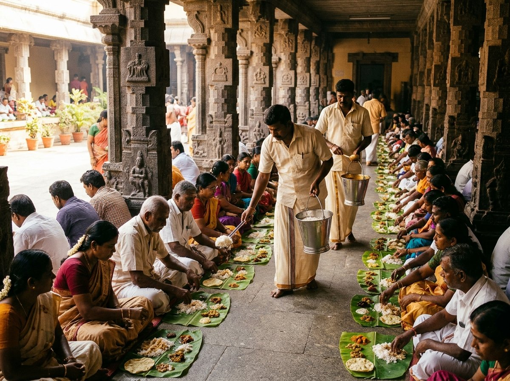
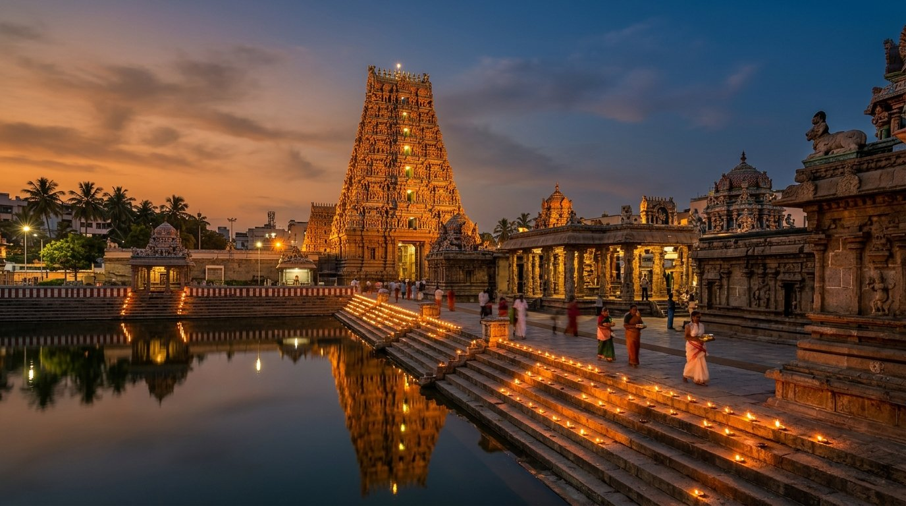
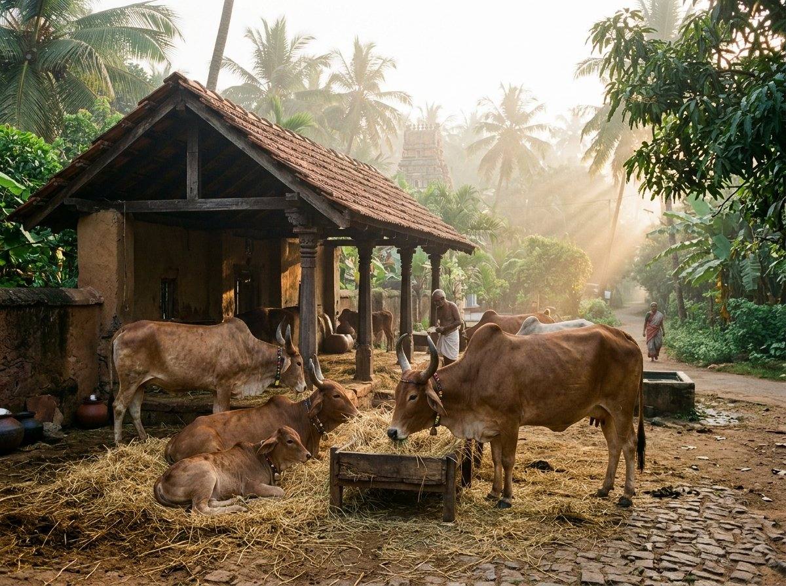
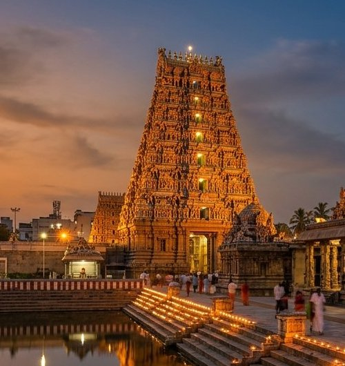

Annadanam
Support food service for pilgrims and people in need. Publish beneficiary counts only when supported by records.

Explore the trust’s vision for cultural preservation, Vedic learning, Annadanam and community welfare through acts of collective seva.
Nourishing pilgrims and families in need.
Sustaining classical learning and scholars.
Restoring stone mandapams and sacred art.
Use this page to communicate the trust’s verified charitable programmes, their purpose, progress and accountability.

Support food service for pilgrims and people in need. Publish beneficiary counts only when supported by records.

Share the purpose, animal care standards and current needs of an operating cow sanctuary.

Document conservation projects, approvals, milestones and use of donated funds.
Where applicable, feature Veda Patashala programmes, cultural education, rural medical camps and other public-benefit initiatives. Explain eligibility, partners, dates and outcomes transparently.

Explore the trust’s core charitable focus areas alongside verified scope, oversight and official participation pathways.
Supporting residential students, traditional scholars, manuscript preservation and community classes in sacred literature and classical arts.
Organising periodic general health check-ups, eye screening camps and essential medicine support in partnership with qualified clinics.
Documenting structural repairs, traditional lime-plaster work and rainwater harvesting improvements approved by conservation specialists.
Charitable trust work thrives through dedicated volunteers who give time, care and discipline during daily rituals and major utsavams.
Assist with dining hall hospitality, clean water stations and orderly food distribution.
Support senior citizens, families and outstation devotees during high-footfall festival days.
Help coordinate spiritual discourses, bhajan evenings and youth heritage workshops.
Review how the trust safeguards devotee contributions from initial selection through project updates and official receipts.
Each active fund publishes its exact charitable scope, beneficiary focus and administrative oversight.
Contributions are accepted strictly through official trust accounts and verified payment gateways.
Milestones for Annadanam, Gaushala care and heritage restoration are shared openly upon approval.
Required transaction confirmations and audited annual reports are maintained for devotee confidence.